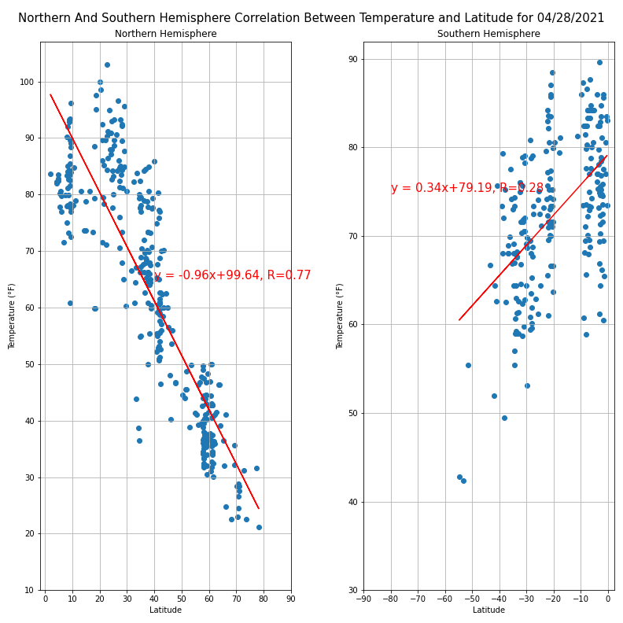
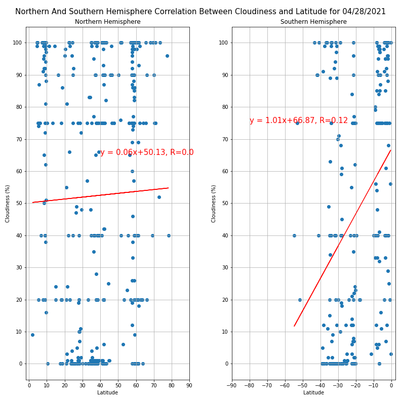
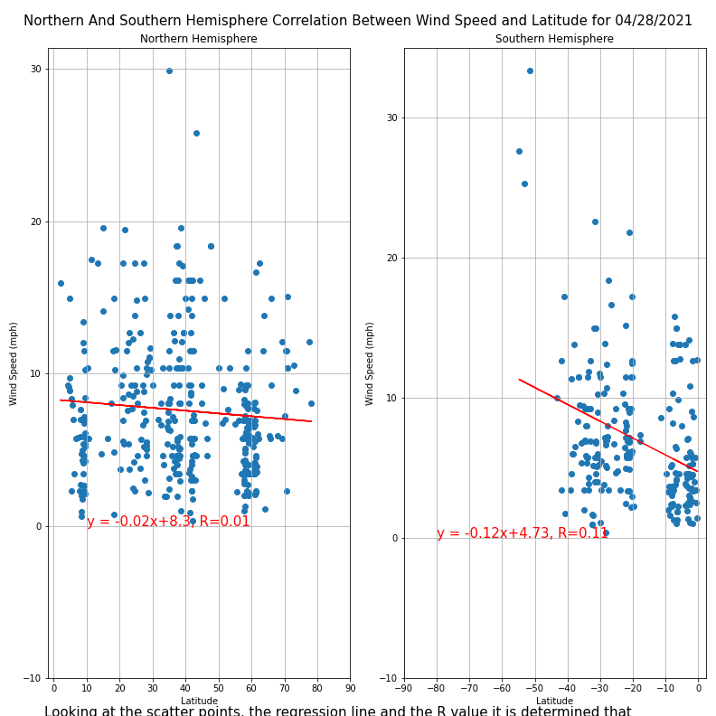

For this part of the project I plotted linear correlations in order to see if the observations obtained from the scatter plots were correct. The observations do stand except for wind speed, I thought a correlation existed but it turned out as a weak one.



